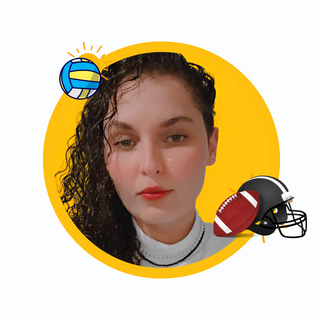

Disciplina "Padrões Web" - Professor Márcio Araya
Catarina Luise

Sou Catarina Luise, ex-atleta, tiver a oportunidade de jogar 10 anos de voleibol e futebol americano. Sou
apaixonada por esporte, tenho como meta promover todos os valores olímpicos e missão coletiva diariamente.Eterna
estudante em busca de conhecimentos, experiências novas, a fim de compartilhar todos meus aprendizados para o
desenvolvimento local. Atualmente estudo "Segurança da Informação". Sou Psicóloga, com propósito de levar
qualidade
de vida, bem-estar, saúde integral para todos que conseguir alcançar e compartilhar a atitude de abraçar
diferentes
perspectivas que alavancam nosso desenvolvimento pessoal e profissional.
Atuação Profissional:
- Empresa 1: FISU (Federação Internacional de Esportes Universitário); COI (Comitê
Olímpico Brasileiro)
- Última Atuação: Mundial de Vôlei de Praia e Triatlhon e Jogos Brasileiro Universitários.
- Empresa 2: FIOCRUZ
- Última Atuação: Psicóloga voluntária do programa de estratégia de apoio psicológico online
para
profissionais de saúde - COVID-19.
- Empresa 3: Psicóloga Clínica (Autônoma)
- Última Atuação: Acolhimento e acompanhamento de demandas específicas do contexto
LGBTQIA+.Identificar patologias mentais e intervir para reduzir o sofrimento emocional.
Habilidades/Especialidades:
- Valores Olímpicos e trabalho em equipe.
- Colaboração e Flexibilidade.
- Sempre em atualização de legislações globais sobre o exercício profissional e direitos humanos.
- Compromissada em promover qualidade de vida e autonomia do sujeito.
- Comunicação.
- Fluência em Inglês e boa compreensão em Francês.
Caso queira saber mais sobre minha trajetória, ambições, metas e objetivos, clique aqui para acessar o meu
perfil no Linkedin
Deseja voltar para página inicial? Clique aqui!